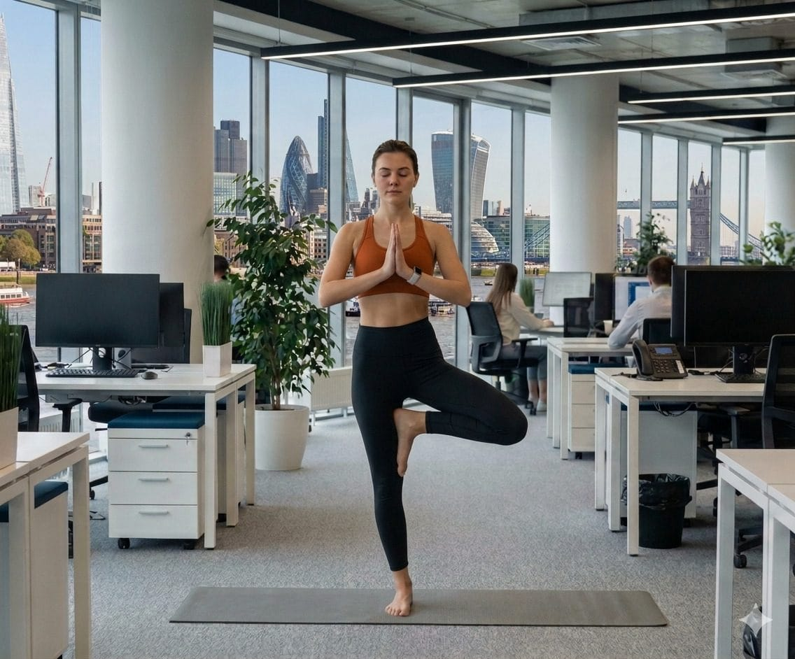

Live online, wherever your team is based
Online corporate yoga classes for remote and hybrid London teams
Not every team is in the same room any more, and virtual workplace wellbeing sessions mean that doesn't have to get in the way of a decent class. We run live online yoga, Pilates and mindfulness and meditation sessions over Zoom, so people can join from home, from the office, or both at once.

01 — The session
An online class works the same way as one in your office, just delivered over video rather than in person. Your teacher runs the session live, tailored to your team the way an in-person visit would be, and up to 100 people can join a single class. If it's a recurring booking, the same link works every time, so there's nothing to re-send week to week.
Hybrid works well for teams split between home and the office: the class runs in your office as normal, with home-based colleagues streamed in on the same call, so nobody misses out because of where they happen to be sitting that day. We also offer shorter, break-length sessions of 15 to 30 minutes for teams who'd rather have a quick reset than a full class, and these work well as a conference break filler too. Sessions can be recorded for an extra fee, so anyone who can't make the live slot can catch up later.
At a glance
- Platform
- Zoom by default, or your own meeting platform on request
- Kit
- A mat helps but isn't essential, plus a cushion or chair for seated practice
- Group size
- Up to 100 people on a single call, with large-group add-ons available
- Format
- Full-length classes or 15-30 minute wellness breaks
02 — How it runs on the day
We send the link once
Before the block of classes starts, we send a Zoom link to your class coordinator to distribute. Recurring bookings keep the same link every week.
Everyone joins from wherever they are
Home workers, office-based staff, or a mix of both, all join the same live class, no separate set-up needed for hybrid groups.
The live class
Yoga, Pilates, or a mindfulness and meditation session, run at a pace that works whether people have a mat down or are simply on a chair.
Recording, if you want one
For an additional fee we can record the session and share the link, so colleagues who missed it can do it in their own time.
03 — Who it suits
This suits teams working remotely, teams on a hybrid pattern, or any office that wants the option of streaming a class to people who aren't on site that day. It's also a natural fit for conferences that want a short, live break filler between sessions rather than a full studio class.
04 — FAQ
Asked often.
What's the difference between a hybrid and a fully online class?
A hybrid class runs in your office as usual, with home-based colleagues joining the same session over Zoom. A fully online class is run entirely by video, with everyone joining from wherever they are.
How many people can join one online class?
Up to 100 people can access a single class, which makes it a good option for whole-company sessions as well as smaller teams.
Do we need any equipment at home?
Not really. A yoga mat is recommended but not essential, and a cushion or chair is enough for mindfulness and meditation sessions.
Can we get a shorter session for a conference or an all-hands?
Yes. Our wellness break sessions run 15 to 30 minutes and work well as a break filler between longer conference sessions.
Can sessions be recorded?
Yes, for an additional fee we can record the class and send the link, so anyone who missed the live session can catch up later.
What does online pricing look like?
Ongoing online classes are priced at £90, £85 or £80 for 60, 45 or 30-minute sessions and under, on the same weekly or fortnightly basis as our in-person classes.
Bring a class to your remote or hybrid team
Tell us how your team is split between home and the office and we'll set up a link that works for everyone. Get in touch via our contact form and we'll take it from there.
Or call +44 7815 837679 · WhatsApp us